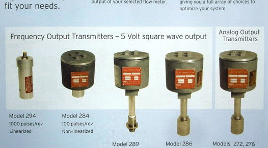

向邦 TURN LUCKILY
首頁
公司簡介
動力計HORIBA
生產線檢測DURR
流量測試台SuperFlow
流量計Max
聯絡我們
流量計 Max
Max machinery 美國
共分三種型式： Piston / Gear / Helical Flow Meter
* 依流體流量範圍，黏度選用適合的流量計
* 可應用於油耗計算，液體流量計算
Max原廠應用範例：
https://www.maxmachinery.com/products/
***Piston Flow Meter***
***Helical Flow Meter***
***Gear Flow meter***
***Transmitter***
